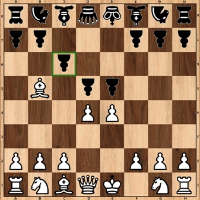

Xadrez é um jogo de tabuleiro que exige um bom raciocínio estratégico para o desenvolvimento das jogadas, que terão efeitos de médio e longo prazo no decorrer da jogatina. É um ótimo exercício para a mente, além de muito divertido e satisfatório também.
O objetivo do jogo é dar xeque-mate, que é a jogada que cerca o rei (peça principal) e impede que ele se movimente no tabuleiro.
Esta página tem como objetivo explicar a base do jogo de Xadrez, de forma clara, simples e direta. Espero que você goste!
Organização das peças e orientação pelo tabuleiro
Peças
♙♖♘
♗♔♕
O jogo de Xadrez é composto por 16 (dezesseis) peças, sendo:
8(oito)peões;
2(duas)torres;
2(dois)cavalos;
2(dois)bispos;
1(um)rei;
1(uma)dama.
Coordenadas
No tabuleiro de xadrez, as colunas são nomeadas por letras, indo da letra “A” até a letra ”H”. Já as linhas são numeradas por números do ”1” ao “8”. Por padrão, as linhas 1 e 2 são sempre ocupadas pelas peças claras, já as linhas 7 e 8, pelas peças escuras.
Assim, é possível que se estabeleça as coordenadas “X” (nomeadas pelas letras) e “Y” (nomeadas pelos números). Por exemplo, com base na posição inicial, o rei das peças claras está na casa e1, já a dama das peças escuras está na casa d8. Desse modo, fica fácil localizar as peças no tabuleiro e planejar as jogadas.
Movimento das peças
♙
Peões
Movem-se apenas para a frente, percorrendo uma única casa por jogada e só capturam na diagonal. Entretanto, em seu primeiro movimento, o peão pode avançar duas casas numa mesma jogada.
♖
Torres
Movem-se em linha reta, para os quatro lados, e por quantas casas o jogador quiser por jogada.
♗
Bispos
Movem-se na diagonal e por quantas casas o jogador quiser por jogada.
♘
Cavalos
O cavalo avança duas casas em linha reta, para qualquer direção e, depois, mais uma casa para o lado, pode ser qualquer um dos dois lados, desde que ele não esteja ocupado por uma peça do próprio time. O cavalo tem a habilidade de saltar as peças das duas primeiras casa percorridas, sejam elas peças do próprio time ou do time adversário, e a captura é feita quando a peça adversária está na última casa. O cavalo percorre o tabuleiro com movimentos em “L”.
O cavalo encontra-se em e5 e, como já dito, ele pode percorrer duas casas em linha reta e uma para o lado, tendo, nesse caso, as possíveis rotas:
Percorre f5 e g5; ficando em g4 ou g6;
Percorre e4 e e3; ficando em d3 ou f3;
Percorre d5 e c5; ficando em c4 ou c6;
Percorre e6 e e7; captura peão em d7 ou f7;
♕
Dama
Também chamada de rainha, é, sem dúvida, a peça mais forte do jogo, move-se em linha reta, para os quatro lados, e na diagonal, podendo se deslocar por quantas casas o jogador quiser, dede que seja num mesmo sentido, ou seja, ou só em linha reta ou só na diagonal.
♔
Rei
Como já dito, o rei é a peça principal e, assim como a dama, anda em todas as direções, mas uma só casa por jogada. O jogador deve proteger o seu rei e encurralar o rei adversário.
Xeque e Xeque-mate
Rei escuro em Xeque. Bispo ataca em b5.
Quando o rei é atacado por uma peça adversária, ele fica em xeque; nesse caso, o jogador pode:
1. tentar interceptar o ataque com outra peça;

Peão intercepta o ataque do bispo em c6.
2. capturar a peça que está atacando ou movimentar o rei para salvá-lo.
Rei escapa do xeque indo para e7.
O jogador não pode movimentar outra peça senão para tirar o rei do xeque.
Se o rei for impossibilitado de se livrar de um ataque, seja por meio do movimento do próprio rei ou de outra peça que o safe, ocorre o famoso xeque-mate e a partida encerra-se.
Xeque-mate. A dama em d8 ataca todas as casas da linha 8, e o bispo em e5 ataca a casa g7, deixando, assim, o rei completamente cercado.
Movimentos especiais
Captura en passant
En passant é o movimento especial de captura de um peão por outro peão.
Como já dito, o peão pode avançar duas casas no seu primeiro movimento. Quando esse movimento é realizado e o peão finaliza seu movimento ao lado de um peão inimigo, este pode capturá-lo como se o peão que realizou o duplo avanço estivesse à sua frente. Entenda melhor observando a imagem que explica o en passant.
Peão claro de e2 vai para e4, avançando, com esse movimento, duas casas.
Peão claro em e4 emparelha-se com peão escuro de f4.
Peão escuro vai de f4 a e3, executando a captura en passant, como se o peão branco estivesse em e3.
Roque
Roque é o movimento especial do rei executado junto com uma das torres. Nele, move-se o rei duas casas em linha reta para a esquerda ou direita e move-se a torre para a casa imediatamente anterior, deixando, assim, rei e torre lado a lado. Veja.
Roque Curto
A bolinha azul indica o local onde o rei irá ficar após o roque, e a bolinha verde ao lado da azul indica o local onde a torre irá ficar.
Veja que agora o roque já foi realizado. O roque do rei com a torre de h1, ou torre da direita, é chamado de roque curto, pois a distância entre eles é menor do que a distância entre o rei e da torre de a1, ou da esquerda.
Veja agora um exemplo de roque longo.
Roque Longo
Roque longo pronto para ser realizado pelo rei e a torre de a8 das peças escuras. Lembrando, mais uma vez que a bolinha azul indica o local onde ficará o rei após o roque, já a verde, que está ao lado dela, o local da torre.
Roque longo realizado pelas peças escuras.
O roque só pode ser realizado se a torre e o rei não tiverem sido mexidos, se nenhuma casa por onde o rei e torre forem passar estiver ameaçada por peças inimigas, se o rei não ficar em xeque após o roque e se o caminho entre rei e torre estiver vazio.
Bem, isso é tudo. Espero que tenha gostado da explicação sobre as regras do jogo de Xadrez e que tenha aprendido um pouco. Agradeço pela sua atenção! Até mais!